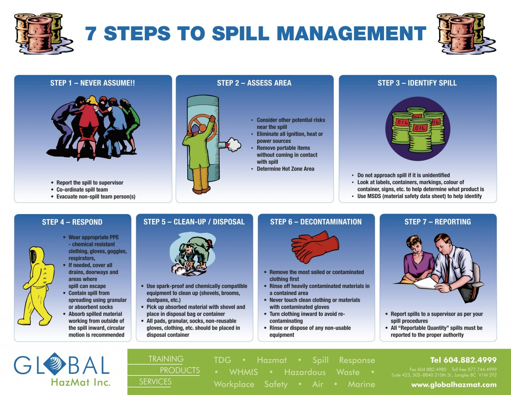

Keep all hallways, walkways, and other communal areas whenever possible.
Label all chemical waste and keep in appropriate areas for safety of all.
All waste most be properly disposed of in appropriate containers. If a spill occurs, please contact the person listed below
Emergency contact:
Ryan Mansfield.
Phone:9788090336
Email:ryan.e.mansfieldield@gmail.com.
Evacuate the area when a chemical spills occurs when needed. Wear all proper PPE.
Source:
GlobalHazmat.comIt is highly unlikely there will ever be biological waste, it may occur. If there is any biological waste, including blood or other bodily fluids, only haz mat certified individuals should clean the spill
Source:
EaPosters.com